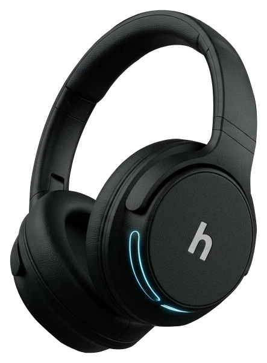

Obra
Furadeira, martelo, britadeira.
Harken · headset com IA
A obra do vizinho, o trânsito na janela, o latido no quintal. A IA do Harken reconhece cada tipo de ruído e tira só ele da sua chamada de vídeo, em tempo real.

Seis microfones captam o som ao seu redor, não só a sua voz.
O app no computador identifica obra, trânsito, latido, buzina e outros.
Um botão para cada categoria. Ligue e desligue o que quiser filtrar.
O áudio limpo segue para o Zoom, o Meet ou o Teams em andamento.
Antes · a cidade inteira na sua call

obra trânsito latido buzina sirene multidãoDepois Só a sua voz.
Demonstração de interface. O áudio é sintetizado no navegador só para ilustrar a ideia, não é o algoritmo real.
Furadeira, martelo, britadeira.
Motores e fluxo de avenida.
Cachorro do quintal ou do vizinho.
Buzinaço e alarme de carro.
Ambulância, polícia, bombeiros.
Vozes de fundo e café cheio.
Specs
Números ilustrativos de uma peça de portfólio, não medições reais.
No conceito, a classificação roda no app do seu computador, sem enviar o som do ambiente para servidores. É um pitch de produto, não uma garantia técnica.
A proposta é funcionar com Zoom, Meet e Teams através do app companion. A arquitetura de captura fica fora deste conceito.
A ideia é manter a latência baixa o suficiente para conversa. Como é conceitual, não há medição real.
Não. Harken é um produto fictício, criado como peça de portfólio para demonstrar storytelling e design de produto.
a partir de R$ 1.299 pré-venda fictícia
Sem cobrança. É um protótipo de portfólio.
Feito à mão, sem framework: HTML, CSS, um motor de rolagem próprio e um pouco de Web Audio. Ver o código